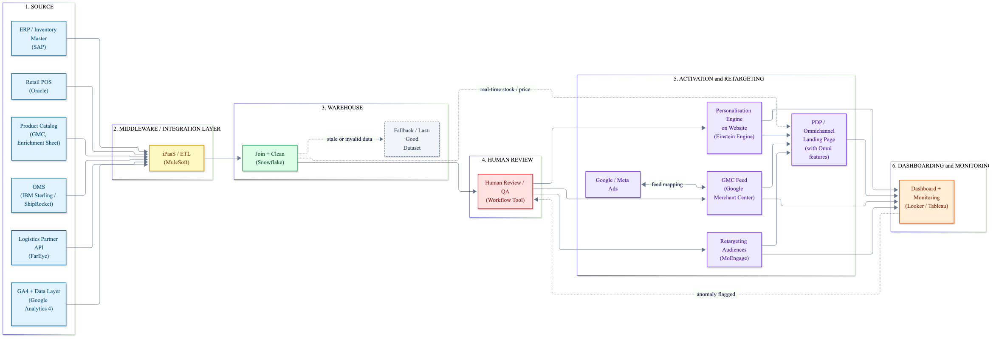

Paid traffic lands on pages that prove real local stock, store pickup and accurate delivery, and the profit this creates decides where ad budget goes next, so acquisition compounds profit, not just revenue.
Overview & intent
The problem
Paid clicks land on PDPs blind to local stock and delivery certainty, and campaigns are optimised on website fulfillment revenue, not leads. As spend scales, marginal ROAS falls. With 95% of visitors anonymous, Castlery can't personalise by user; omnichannel enablement reduces that anonymous share, and since Castlery already owns product × geo data, that is the pragmatic axis to optimise on.
Why this bet?
| Signal / evidence | Implication |
|---|---|
| Omnichannel gap vs Freedom / IKEA — no stock view, find-in-store, or click & collect | Build it: proven headroom |
| Omnichannel lift cuts CAC 9% (A$182 → A$165) on the same spend | A real profit signal to feed back into paid budget |
| CAC rising, marginal ROAS falling with scale | Optimise profit-ROAS, not revenue-ROAS |
| 95% anonymous visitors | Optimise at product × geo, not user, for better ad performance |
| Delivery clarity reduces cart abandonment (Baymard) | Delivery, stock & fulfillment info belongs on the landing page itself |
Scope to MVP
Ship first
- Landing modules shown to paid traffic: local store stock (find-in-store), click & collect fulfillment, and an exact delivery ETA (a date, not a range).
- Profit score per SKU × geo, refreshed every 3 hrs, using stock, margin, returns, and measured omnichannel-enabled lift.
- Score drives product inclusion (in / out of the paid feed) and budget tilt, both human-approved, not auto-applied.
- Profit-ROAS dashboard.
Non-goals
- Replacing Google / Meta bidding algorithms — we feed signals only.
- Full PDP revamp — modular additions only; UI is already optimised.
- Auto-applied budget changes — human approval required in MVP.
- Store video call — a separate initiative, not in this PRD.
- Identity resolution / CDP rebuild.
Roadmap
Data inputs
| Source | What it provides |
|---|---|
| Product catalog (GMC feed) | SKU, price, cost, stock |
| Store POS stock | Per-store inventory, mapped to showroom / ecom orders |
| Order history | Revenue & returns |
| Web analytics | Sessions, conversion by SKU × geo, ATC, checkout, logins, wishlists |
| Ad platforms | Spend & clicks, sessions & CX |
Key risks
Stale / non-updating stock feed showing wrong availability. Mitigation: never show non-updated stock; always do real-time inventory sync, suppress the module when data is stale. Use webhooks and push APIs.
Concurrent in-store and online orders on the same piece, which can increase website bounces and in-store customer disappointment.
Returns lag actual profit. Mitigation: use a trailing 30-day returns estimate.
Offline orders not linked to an online SKU / geo, weakening the profit signal.
Basic schema
| Field | Type | Source | Constraint |
|---|---|---|---|
| sku_id | string | Catalog | Unique, non-null |
| geo_store_id | string | GMB / POS / manual | Must match a valid store |
| date | date | Pipeline | On or before today |
| store_stock_qty | int | POS / vendor | ≥ 0; null if stale |
| unit_price_aud | decimal | Catalog | > 0 |
| omni_exposure_flag | boolean | Analytics | true / false, non-null |
| omni_profit_lift | float | Model output | Numeric value |
| OrderPlaced | event | OMS | Triggers stock deduction & allocation |
| StockReceived | event | POS / ERP | Updates store_stock_qty in real time |
System flow & CFTs

Cross-functional ownership
| Workstream | Owning team |
|---|---|
| Google / Meta Ads — performance marketing | Performance Marketing |
| CDP & analytics | Analytics & Growth |
| Personalisation | Growth |
| UI/UX design (stock badges, find-in-store, collect flow, store page, delivery-ETA display) | Product Design |
| Frontend / web development (PDP components, store-page revamp) | Engineering · Frontend |
| Backend / pipeline development (stock sync, scoring service, APIs) | Engineering · Data & Backend |
| Store inventory & POS integration | Engineering + Retail Systems |
| Logistics & delivery-ETA accuracy | Logistics / Supply Chain |
| Store fulfillment & collect operations | Retail Ops |
| QA / testing (functional, data, UI) | Engineering QA |
| Store-staff training & upskilling | Retail Ops / Enablement |
Requirements & acceptance criteria
Store-stock feed integration
Sync per-store inventory into the e-com bin.
Real-time inventory sync: stock deduction & allocation. Stock updates within < 500 ms of the payment initiation step, not order creation.
Find-in-store lookup widget
From the PDP, a shopper can check which nearby stores carry a given SKU in stock.
Returns the correct store list for a test SKU within SLA response time; when unavailable, shows a "notify me" lead-capture CTA.
Click & collect checkout funnel
Shopper can choose in-store pickup at checkout when local stock exists, with an option to switch to online delivery.
Collect option only appears when store_stock_qty > 0 for a reachable store with delivery distance < 100 km.
Delivery-expectation display widget
PDP shows an accurate estimated delivery date per SKU × geo (location auto-fetched or prompted).
Estimate matches logistics SLA by category; falls back to a generic range observed by predictive analytics if SKU-level data is missing or the logistics API fails. Never blank, never leave the user guessing when the product would reach them while it shows in stock and ATC is available.
Landing PDP modules
Shopper sees local stock, a fulfillment option, and delivery ETA on the page they land on.
Modules auto-suppress if stock data is stale.
Profit score
Score per SKU × geo, refreshed every 3 hrs, falling back to the category average when data is minimal.
Job completes on schedule.
Dashboard
Profit-ROAS shown alongside revenue-ROAS, with a treatment vs control view.
Updates every 3 hrs, drillable by SKU / geo.
Impact metrics
Experiments
Appendix · AI-assisted diagram
AI was used to generate the system design diagram above. The exact prompt is recorded below for transparency.
Help me with a system diagram for OMNI enablement + Paid flow. For most of the technologies I am giving examples in brackets; for the ones I am missing, please add. There are 4+ buckets: Source, Middleware / Integration layer, Warehouse, Human Review, Activation, and Dashboarding. SOURCE — include blocks: Retail POS (Oracle), OMS (IBM Sterling / ShipRocket), Product Catalog (GMC, Enrichment Sheet), Logistics Partner API (FarEye), GA4 + Data Layer, ERP / Inventory Master (SAP). MIDDLEWARE — iPaaS / ETL (MuleSoft). WAREHOUSE — Join + Clean (Snowflake), Fallback / Last-Good dataset. HUMAN REVIEW — Human Review / QA (Workflow Tool). ACTIVATION & RETARGETING — Personalisation Engine on website (Einstein Engine), Retargeting Audiences (MoEngage), GMC Feed (Google Merchant Center), Google / Meta Ads, PDP (with omni features). DASHBOARDING & MONITORING — Dashboard + Monitoring (Looker / Tableau). Flows: Sources → Middleware: Retail POS / OMS / Product Catalog / Logistics API / GA4 / ERP → iPaaS/ETL Middleware → Warehouse: iPaaS/ETL → Join + Clean Warehouse → Human Review: Join + Clean → Human Review Human Review → Activation: → Personalisation, → Retargeting, → GMC Feed Warehouse → Activation (real-time): Join + Clean ⇢ PDP (real-time stock / price) Within Activation: Google/Meta Ads ⇄ GMC Feed (feed mapping); GMC / Retargeting / Personalisation → PDP Activation → Monitoring: PDP / GMC / Retargeting / Personalisation → Dashboard Failure handling (reverse arrows): Join + Clean ⇢ Fallback/Last-Good (stale/invalid data); Dashboard ⇢ Human Review (anomaly flagged).